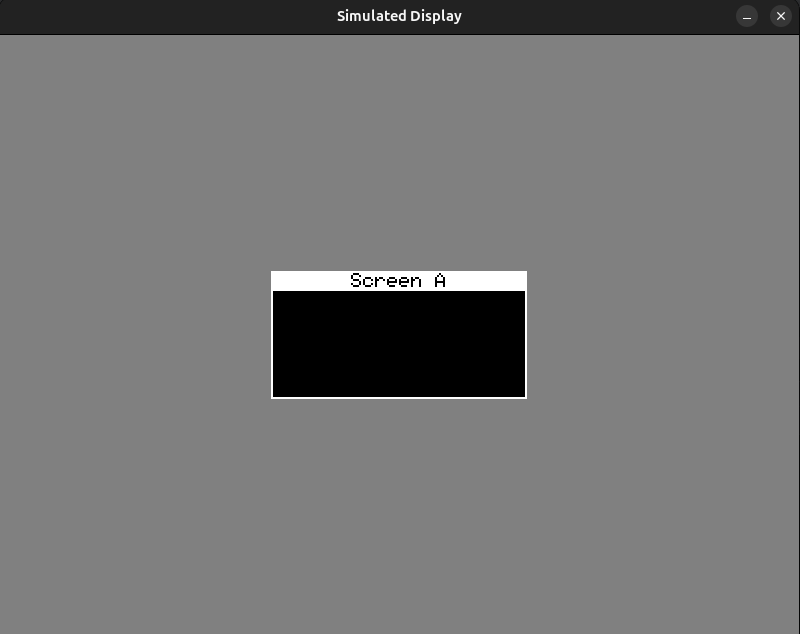

There might be situations when you don't have the hardware available, or you want to debug your application deeply. Then you should use the SDL backend provided.
This acts like a simulated display.

Features:
- Zoom In/Out
- Better application debugging
- More WIP
The SDLDisplay inherits from Display.h and defines itself just like any other display.
Example
Below is an usage example:
#include "platform/sdl/SDLDisplay.h"
#include "platform/sdl/SDLWindow.h"
#include "core/Graphics.h"
#include "widgets/Screen.h"
#include "core/Stack.h"
#define SCREEN_WIDTH 800
#define SCREEN_HEIGHT 600
SDLDisplay display(
128,
64
);
Graphics gfx(&display);
SDLWindow window(&display);
Stack screenStack(display, gfx);
Screen screen_a(&display, "Screen A");
void setup() {
screenStack.addScreen(screen_a);
display.clear();
screenStack.goTo(display, screen_a, gfx);
display.flush();
}
void loop() {
screenStack.renderApp(gfx);
display.flush();
}
int main() {
window.create();
window.loop(loop, setup);
}
Please see Displays for display related functions.
SDLWindow::SDLWindow()
Params: - SDLDisplay *display
Creates an instance of SLDWindow.
SDLWindow::create()
Internally creates SDL window, renderer and inits the framebuffer.
SDLWindow::loop()
Params:
-
std::function
-
std::function
Starts a SDL loop, you must provide your application setup loop similar to Arduino
applicationSetup contains the instruction that run only once when application starts.
applicationLoop is where your application run it's own loop within the SDL loop.
Please view the example above.